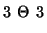
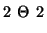
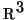
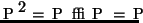
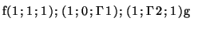
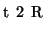

| Questão | Valor | Nota | Revis. | |||||
| 1 | 2.5 | |||||||
| 2a | 0.5 | |||||||
| 2b | 0.5 | |||||||
| 2c | 0.5 | |||||||
| 2d | 0.5 | |||||||
| 2e | 0.5 | |||||||
| 3a | 0.5 | |||||||
| 3b | 0.5 | |||||||
| 3c | 0.5 | |||||||
| 3d | 0.5 | |||||||
| 3e | 0.5 | |||||||
| 4a | 0.5 | |||||||
| 4b | 0.5 | |||||||
| 4c | 0.5 | |||||||
| 4d | 0.5 | |||||||
| 4e | 0.5 | |||||||
| Total | 10.0 |
Marque no quadro as respostas da primeira questão. Não é necessário justificar esta questão.
ATENÇÃ0: resposta errada vale ponto negativo!, a questão pode ter nota negativa!
| Para uso exclusivo do professor | ***** | ***** |
Certas: |
0.3 | |
Erradas: |
-0.2 | |
***** |
Total | |
1) Decida se cada afirmação a seguir é verdadeira ou falsa e marque com caneta sua resposta no quadro abaixo. Atenção: responda todos os itens, use "N = não sei" caso você não saiba a resposta. Cada resposta certa vale 0.3, cada resposta errada vale -0.2, cada resposta N vale 0. Respostas confusas e ou rasuradas valerão -0.2.
| Itens | V | F | N | |
| 1.a | ||||
| 1.b | ||||
| 1.c | ||||
| 1.d | ||||
| 1.e | ||||
| 1.f | ||||
| 1.g | ||||
| 1.h | ||||
| 1.i |
1.a)
Considere as retas de equações paramétricas
1.b) A multiplicação de duas matrizes ortogonais é uma matriz ortogonal.
1.c)
Sejam A uma matriz 
cujo polinômio
caraterístico é
1.d) Seja A uma matriz  ortogonal e simétrica. Então A representa um espelhamento.
1.e)
Considere o plano
de equação cartesiana
ax+by+cz=d e a reta
r=(p1+tv1, p2+tv2, p3+tv3).
Suponha que
 .
Então a reta e o plano têm exatamente um ponto de interseção.
.
Então a reta e o plano têm exatamente um ponto de interseção.
1.f)
Considere a matriz
1.g) Considere uma transformação linear P de  tal que . Então P é uma projeção ortogonal.
1.h) O produto de duas matrizes inversíveis é uma matriz inversível.
1.i) Os vetores formam uma base ortonormal.
2) Considere o plano x+y+z=0, o ponto p=(1,1,1) e as retas r1=(t,1-t,t) e r2=(1-t, 1+t,t), . Determine
3) Considere a projeção ortogonal P no plano 2x+2y+2z=0 e a projeção Q no plano x+y+z=0 na direção da reta (t,-t,0), .
4)
Considere a matriz